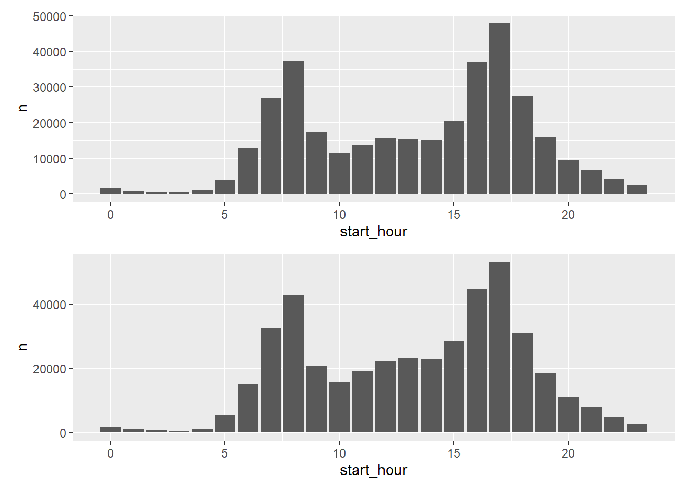
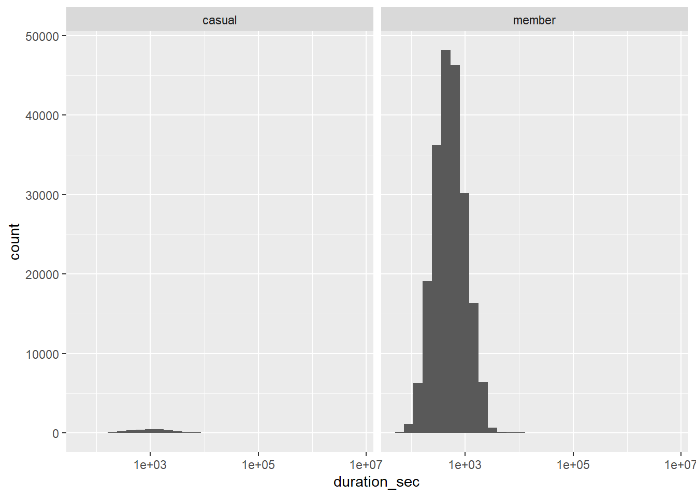
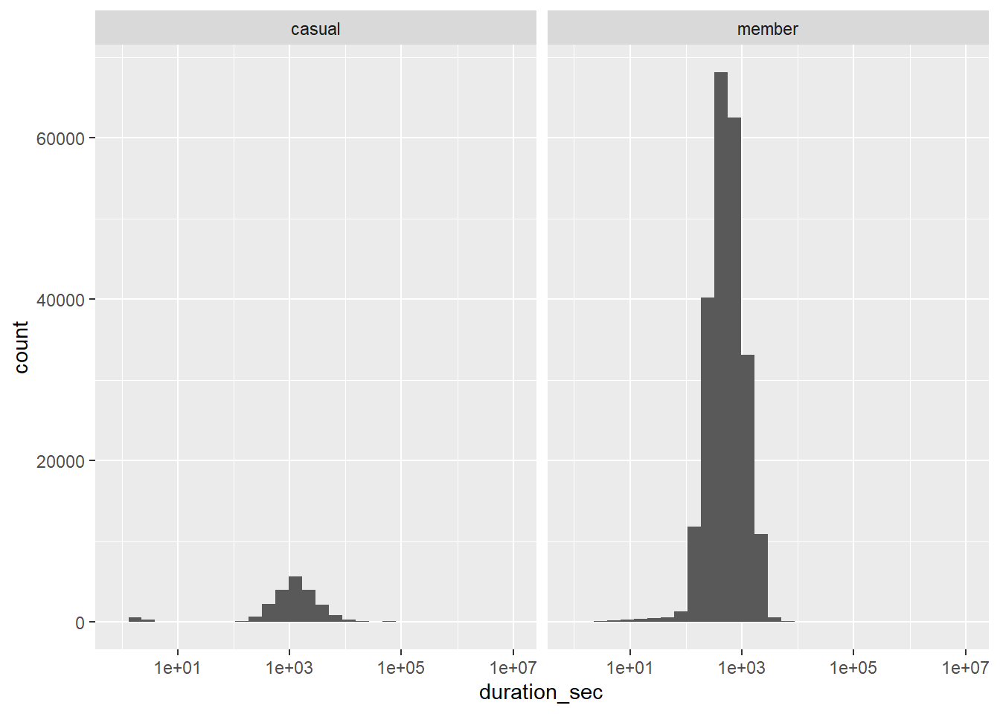
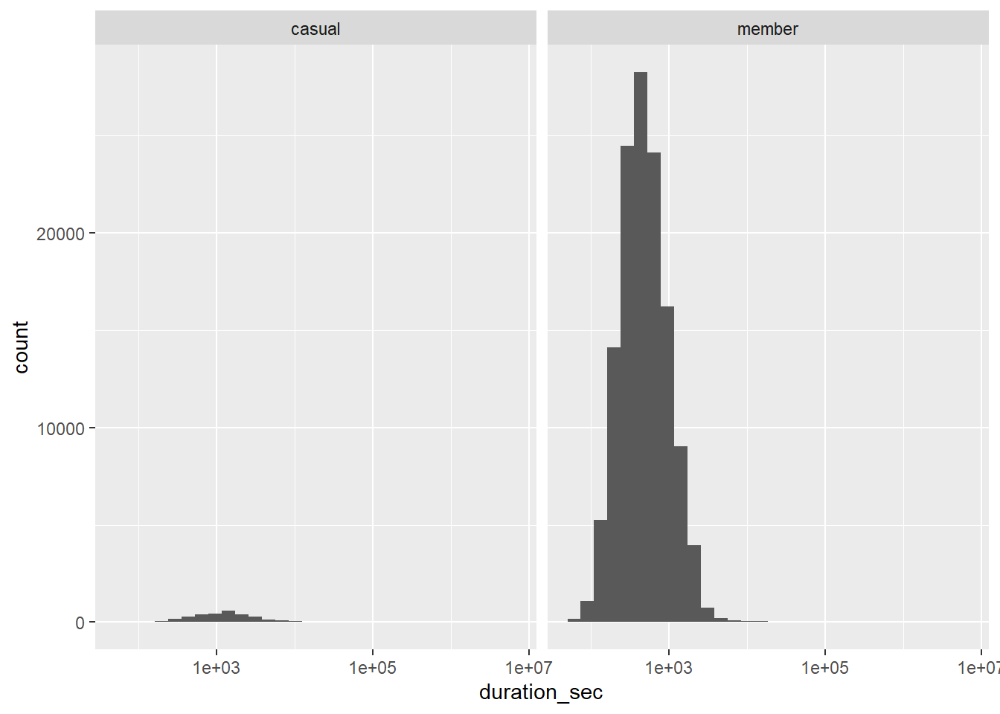
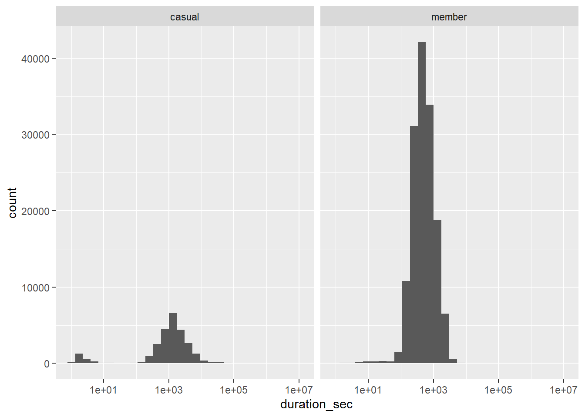
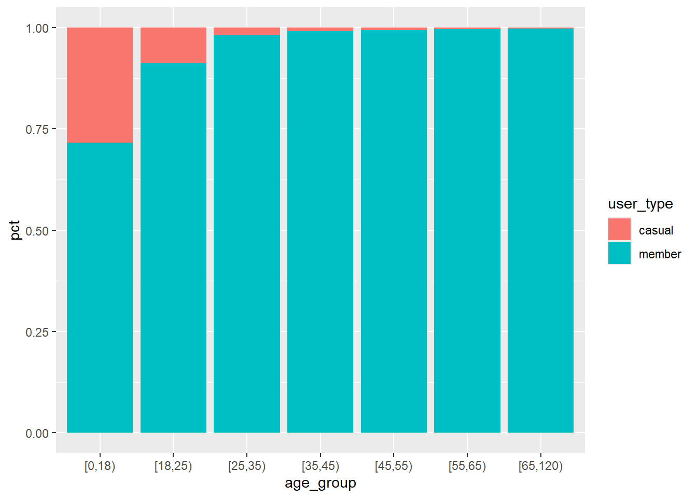
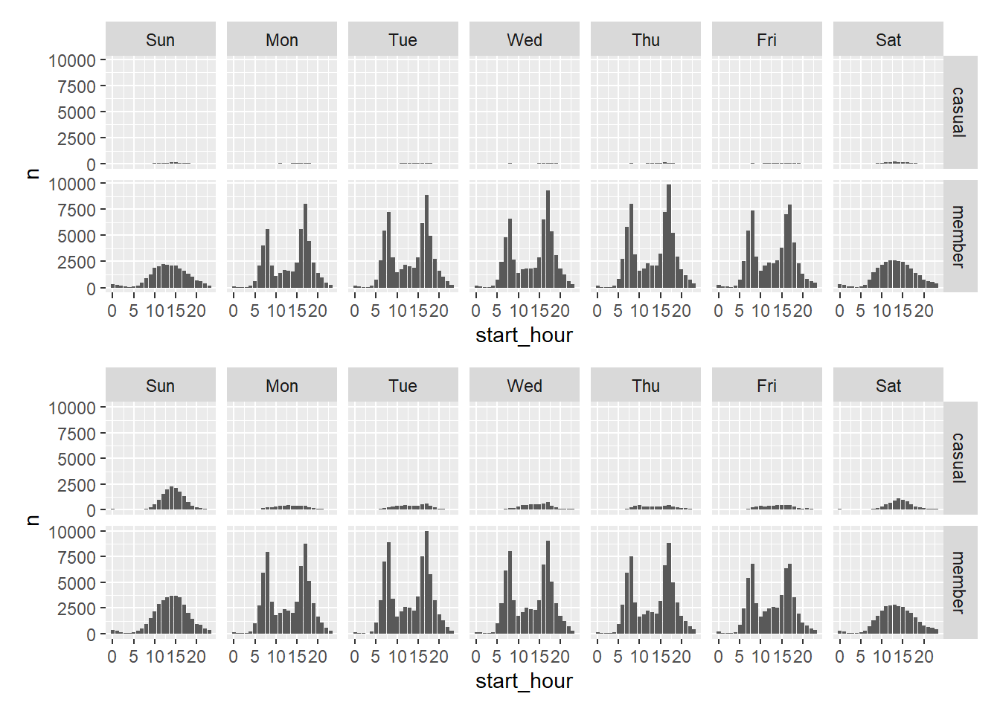
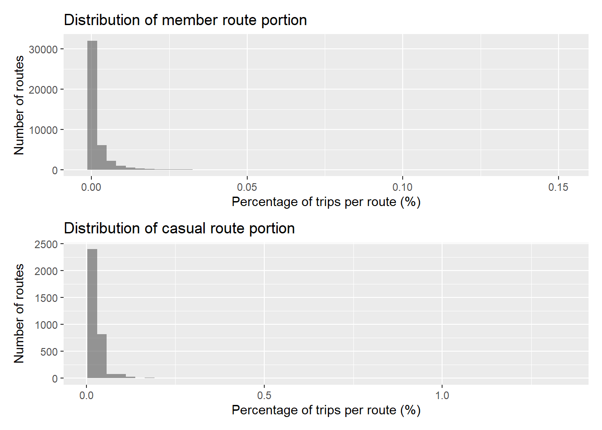

SELECT
tripduration,
start_time,
end_time
FROM
`mindful-girder-420702.cyclist_case_study.trip_info_2019`
ORDER BY tripduration DESCReport Cylistic Case Study
ASK
The business task
The company want to increase the amount of casual riders who buy the membership. Firstly, they want to know what the differences between casual riders and annual ones. I have to check for these things:
- Identify the differences between theese two types of membership
- Examine wether they’re correlations or causations
- Explore why there are those differences
- Predict on what might change if any of the differences changes
Key stakeholders
- Me a.k.a the man who carry 1/3 of the sky :))
- Monero: My boss :)) who will decide what to do with the marketing campaign
- Marketing and analytics team: My team who will support me with other phases in the analysis or help me to completing mine.
- Executive team: Boss of the boss, will decide to approve the recommendation
Deliverables
Examine the key differences between these two types of customers, what differences might lead them to sign up for annual passes, base on data in most recent year, which will be possible for the marketing team to set up campaigns.
Seeing the differences between casual riders and annual members might reveal the reason between customer’s decisions, or the changes in their mind. So that the company can plan for campaigns which will bring more customers with the same conditions or encourage currently customers and transform them to potential customers who are ready to buy memberships.
PREPARE
Download the data and store approriately
- The data is located in the database of the company, with 2 tables required for analyzing. I stored them in the dataset file in the computer so that I can easily manage the files.
- The size of the files are quite big (50-70MB), this is one of the three tasks that I and my team have to collaborate to complete, I will upload it to Big Query and use SQL to clean and transform the data first.
Identify how the data is organized
- The data is stored in tabular format with each row is a sample of a trip ride. Depends on the version, there are a little bit difference between them.
- For 2019 file, it contains information of identity (trip_id, bikeid, from_station_id, to_station_id), general information of the trip (start_time, end_time, from_station_name, to_station_name) and information about the user (usertype, gender, birthyear)
- With 2020 file, the data got more information about the ride (rideable_type, start_lat, start_lng, end_lat, end_lng). However, it doesn’t have more information about users. There might be some conclusions which said these variables don’t have value for further analytics for improve the business.
Sort and filter the data
- With 2019 data
- First, I will sort the data by several variables to check if there is any outlier in the tripduration and birthyear.
- Then, I’m gonna check for the missing value in the id, station name and usertype, birthyear and gender columns.
SELECT # Check for id
COUNT(*) AS missing value
FROM
`mindful-girder-420702.cyclist_case_study.trip_info_2019`
WHERE
(
SELECT
countif(miss_id IS NULL)
FROM
UNNEST([trip_id, bikeid, from_station_id, to_station_id]) AS miss_id
) > 0- Next, I’m gonna check if there is any issues in logic like the id number is negative or start time is later than end_time.
SELECT
countif(
bikeid <= 0
OR tripduration <= 0) AS constraint_violation,
countif(
start_time > end_time
OR tripduration <> timestamp_diff(end_time, start_time, second)
OR birthyear < 1925
OR birthyear > 2019) AS logical_issues
FROM
`mindful-girder-420702.cyclist_case_study.trip_info_2019`- Finally, I’m gonna check for duplicate data base on the characteristic of datatype, the trip_id must be unique
SELECT
trip_id,
COUNT(*) AS num_of_dup
FROM
`mindful-girder-420702.cyclist_case_study.trip_info_2019`
GROUP BY trip_id
HAVING COUNT(*) > 1- With the 2020 information, the steps is quite similar, however, there are also a little difference
SELECT
timestamp_diff(ended_at, started_at, minute) AS trip_duration_minutes
FROM
`mindful-girder-420702.cyclist_case_study.trip_info_2020`
ORDER BY trip_duration_minutes DESCSELECT
countif(
timestamp_diff(ended_at, started_at, minute) < 2
AND start_station_name = end_station_name) AS num_of_outliers
FROM
`mindful-girder-420702.cyclist_case_study.trip_info_2020`Determine the credibility of the data
- I examine the integrity of the data by querying follow principles, such as:
- missing value
- duplicate data
- inconsistent data
- outlier
- noise
Step by step, I’ve spotted a couples of point that I may have put attention on when I move to the next phase.
With the 2019 information:
- I have noticed that 7 of the customer rent the bike for more than 1 months, maximum for 4 months.
- 836 samples said that the customers rented the bike for no more than 3 minutes and they returned it back the the station then.
- 171 rides belong to the customers who are older than 98 years old.
- 19712 samples with missing value in gender or birthyear column
- 24 samples where tripduration is not equal to calculation base on start_date and end_date.
With 2020 information It don’t contain gender and birthyear column, so no need to check for it. However, they have latitude and longitude information, so that I’m gonna check if these data are valid. So that for the similar steps like the latest table, I have spotted these things:
- 21 trips have the duration of using bike more than 1 months.
- 8481 trips have the duration shorter than 3 minutes and returned the bike at the same station.
- 8206 trips have the same condition with 2 minutes
- 157EAA4C4A3C8D36 ID have no information about end_station_id, name, latitude and longitude
- 117 samples which has start time later than end time Spotting on outlier, or unusual points of the data can help me determine whether eliminate the false points to increase the accuracy of the analysis. Or maybe the outlier will open a footprint to a more valuable insight. During the prepare phase, I also make sure that my methods and tools are comply with licensing terms. For example, I’m gonna check if the data is opened, restricted share.etc. If there are any ambiguity, I’m gonna announced to the data owner instead of assuming the allowance.
Deliverables
- Name: Cyclistic Bike-Share
- Provider: Cyclistic Co.ltd
- Description: The dataset contain records of individual trips made my customers from 2019 to 2020. Each record contains information about identities of related objects, information of the trip such as trip duration, station’s name and side information of the customers
- Time period: 2 tables with each table contains the records of 1 year from 2019 to 2020
- Key variables:
- trip_id, ride_id: unique key for each record
- bike_id, from_station_id, to_station_id: unique identity for bikes and stations
- start_station_name, end_station_name: station where each trip starts and ends
- tripduration: duration of the trips in seconds
- Limitation and note:
- The dataset mostly includes data of the trip rather than demographic data of the customers.
- Minor of the trips have too short or too long duration, or invalid start time and end time, the age of some of the customers are too great
- The data credibility is rely on the accuracy of the sensors and available stored information of the users.
PROCESS
Check the Data for errors:
The error have been checked in the prepare phase. In this phase, it is important to see which of the errors are worth to be kept or to be eliminated.
Choose the tools:
- Because the requirement of tracking my work and the big size of the data (50-70MB), I would like to use SQL for processing the data because it works faster and I can track on my process with code files.
- In parallel with that, I would like to use R to check more for the distribution of the data and create different versions of the data to see whether they bring different results or not.
Transform the data so I can work with it effectively
(More details in next task)
Document the cleaning process
Because both of the table have different schema, so I would like to process each table one by one and won’t combine them immediately to avoid further bias.
2019 trip info
- 24 records has the tripduration is different from time mark, I dive a little bit deeper and see that 15 of them have the deviations more then 1 minutes. Then I decide to fix the data by replace the tripduration with time_end - time_start.
- Some of the record said that the trip duration is too long or too short. However, short time maybe for testing and long time is really long trip. I will keep these data for further analyze.
- 171 records with customers older than 98 years old will be kept also because I need more validation in the future.
SELECT
* EXCEPT (tripduration),
timestamp_diff(end_time, start_time, minute) AS tripduration
FROM
`mindful-girder-420702.cyclist_case_study.trip_info_2019`- After dowloaded the data and change the name of the file, I rename the columns in order to sync with 2020 data for more convinient analysis
- I then realize that the task to sync variables between dataset must have done in the prepare phases.
- Then, I notice that there’re demographic data in the 2019 data and these demographic information have null value. I decided to perform 2 analytical populations, one is analysis is based on trip information, another one is the demographic.
- 2020 trip info
- The same stuff with suspicious points will be kept
- The record which has no destination information will be deleted
- Records which have start time later than end time will also be deleted too.
- Add a trip_duration column to the tables
SELECT
*
TIMESTAMP_DIFF(ended_at, started_at, second) as duration
FROM
`mindful-girder-420702.cyclist_case_study.trip_info_2020`
WHERE
started_at < ended_at
AND end_station_id IS NOT NULL- I will rename the columns before further filter. In parallel with that, I notice that the rideable column has only single unique value “docked_bike”, I decide to exclude it from analysis as it provides no varience.
- Base on business questions and available variables, I will combine and extract them to create new variables, they are:
- route_id: combine from
from_station_idandto_station_id - duration_sec: extract from
start_timeandend_time - duration_min: exchange from
duration_sec - weekday: extract from
start_time - is_weekend: to validate if there are any different behavior in the weekend, extract from
weekday - round_trip: to see different insights of people who start and end the ride at the same place, check with the
start_station_idandend_station_id - age: Besides, with the demographic data in 2019, I will add an age column extract from
birth
- route_id: combine from
Deliverables
Because the 2019 and 2020 datasets have different schemas, each dataset was processed independently during the data cleaning phase. The datasets were not combined at this stage in order to avoid introducing structural bias or premature assumptions.
2019 Trip Data:
Several data quality issues were identified and addressed:
A total of 24 records were found where the reported
tripdurationdid not match the difference between the recorded start and end timestamps.- Among these, 15 records showed deviations greater than one minute.
- For consistency and accuracy,
tripdurationin these records was recalculated using the difference between end time and start time.
Records with unusually short or long trip durations were reviewed.
- Short-duration trips may represent testing behavior.
- Long-duration trips may represent legitimate extended usage.
- These records were retained for further analysis rather than removed at this stage.
171 records indicated users with an age greater than 98 years.
- These records were retained, as additional validation is required before determining whether they represent data errors or edge cases.
After downloading and renaming the raw data files, column names were standardized to align with the 2020 dataset for future integration.
Demographic variables present in the 2019 dataset contained missing values.
- As a result, two analytical populations were defined:
- Trip-based analysis using all valid trip records.
- Demographic analysis using only records with non-missing demographic information.
2020 Trip Data:
- As a result, two analytical populations were defined:
The 2020 dataset underwent a similar but independent cleaning process:
- Records with suspicious values were retained for consistency with the 2019 analysis.
- Records missing destination information were removed, as they could not support complete trip analysis.
- Records where the start time occurred later than the end time were removed due to logical inconsistency.
- A
trip_durationcolumn was created based on start and end timestamps. - Column names were standardized prior to further filtering.
- During this step, it was observed that the
rideable_typecolumn contained only a single unique value ("docked_bike"). - This column was removed from analysis due to the absence of variance.
- During this step, it was observed that the
ANALYZE
Setting up Hypothesis
Start with the question at first “What are the differences between member and casual user?” and following information we have to give the the stakeholders, which were defined in ask phase
- Identify the differences between these two types of membership
- Examine whether they’re correlation or causation
- Explore why there are those differences
- Predict on what might change if any of the differences changes
So first, I will try to build a frame of hypothesis base on the key question, then base on these hypothesis, I will verify if they’re true or not.
- From the business question: “What are the differences between member and casual user?”, I have came up with some hypothesis:
- H1: Members show peak riding activity during early morning and late afternoon hours, with a higher proportion of round trips compared to casual riders.
- H2: Member riders have shorter trip duration and stronger weekday peak-hour patterns than casual riders.
- Then, base on unusual point that I have noted, I think that:
- H3: Membership adoption increases with age but plateaus among middle-aged and older users (2019 data only).
- H4: Trip duration distributions differ significantly between casual riders and members, with casual riders exhibiting heavier tails and greater variability.
- Base on contrast about the group, I will put some more hypothesis like:
- H5: Members ride disproportionately more on weekdays compared to casual riders.
- Base on behavior logic
- H6: Member rides are more concentrated on a smaller set of routes compared to casual rides.
- From the business question: “What are the differences between member and casual user?”, I have came up with some hypothesis:
Hypothesis Validation
I then use kind of method to check if these hypothesis are true or not.
H1: Members show peak riding activity during early morning and late afternoon hours, with a higher proportion of round trips compared to casual riders.
Break down the hypothesis. We can see two sub-hypothesis: * H1a: Members show peak riding activity during early morning and late afternoon hours * H1b: Members show higher proportion of round trips compared to casual riders.
Lets dive in to the first part.

As we can see, two tables has the same shape in graphs. There are two timelines when a surge in usage is observed the most: 8 AM and 5 PM.
Hourly trip counts were normalized by the maximum hour. A clear break point was observed around 35.55% of the maximum, where the relative differences between adjacent hours dropped below 2%. Therefore, peak hours were defined as hours with at least 35.55% of the maximum trip count.
- 2019 data:
peak hour member percentage: 62.33 % peak hour casual percentage: 49.11 % - 2020 data:
peak hour member percentage: 61.15 % peak hour casual percentage: 45.03 % When looking at the result of 2019 data, 62.26% of member riders ride in peak hour, compare to 47.56% casual riders. These two number aren’t even changed much with full data with its tail. To be more specifically, 62.22% of member riders ride in peak hour and 46.73% for casual riders. The same thing also happens to 2020 data with 61.18% and 46.74% for member riders and casual riders one by one in trimmed data and 61.15% and 45.03% for full data.
While peak-hour concentration highlights differences in intra-day riding patterns between member and casual users, peak hours alone do not distinguish between weekday- and weekend-driven usage. To further examine whether peak-hour riding reflects structured, schedule-driven behavior, the analysis was extended to compare weekday and weekend distributions across user types.

Through observation, I spotted that the weekends recorded trends which are different from week day.
weekend are saturday and sunday while weekday are the other days in the week
On weekdays, member riders exhibit a pronounced biomodal distribution with clear peaks during early morning and late afternoon hours, consistent with commuting patterns. In contrast, weekend riding shows a flatter temporal distribution for both user types, suggesting leisure-oriented usage rather than work-related travel.
2019 data:
# A tibble: 4 × 4
# Groups: user_type [2]
user_type is_weekend n pct
<chr> <lgl> <int> <dbl>
1 casual FALSE 3637 61.3
2 casual TRUE 2297 38.7
3 member FALSE 286373 84.4
4 member TRUE 53050 15.62020 data:
# A tibble: 4 × 4
# Groups: user_type [2]
user_type is_weekend n pct
<chr> <lgl> <int> <dbl>
1 casual FALSE 25904 53.7
2 casual TRUE 22366 46.3
3 member FALSE 312339 82.5
4 member TRUE 66068 17.5While weekday usage among members remains relatively consistent across both years, casual riders exhibit greater year-over-year variability. This suggests that casual usage may be more sensitive to external factors, whereas member riding patterns appear more routine and stable.
Then, I will use IQR and Median to validate whether the above conclusion is true or not
- 2019 duration outlier data:
# A tibble: 2 × 4
user_type total outliers pct
<chr> <int> <int> <dbl>
1 casual 2914 246 8.44
2 member 211561 11990 5.67- 2020 duration outlier data:
# A tibble: 2 × 4
user_type total outliers pct
<chr> <int> <int> <dbl>
1 casual 21735 1905 8.76
2 member 231396 13277 5.74After checking the IQR, I’ve noticed that there are 8.44% data of casual rider duration out of the bound, which mean 8% outliers. This number for member riders are 5.66%. These numbers are very noticable. In 2020 data, the numbers are very similar (8.76% for casual riders and 5.73% for member riders). This means that the outlier represent a clear behavior of the users and need to dive deep in see more insights.
I then check the positions of their own tail to see whether the tails represent for the similar behavior.

# A tibble: 2 × 6
user_type total outlier_left outlier_right pct_left pct_right
<chr> <int> <int> <int> <dbl> <dbl>
1 casual 2914 0 246 0 8.44
2 member 211561 0 11990 0 5.67
# A tibble: 2 × 6
user_type total outlier_left outlier_right pct_left pct_right
<chr> <int> <int> <int> <dbl> <dbl>
1 casual 21735 0 1905 0 8.76
2 member 231396 0 13277 0 5.74Both of the data show that its own tails is on the right side which mean the tails show a systematric pattern and need to be validated. I decided to check with non peak data to see whether they have the same tail or not.

# A tibble: 2 × 6
user_type total outlier_left outlier_right pct_left pct_right
<chr> <int> <int> <int> <dbl> <dbl>
1 casual 3020 0 273 0 9.04
2 member 127862 0 8350 0 6.53
# A tibble: 2 × 6
user_type total outlier_left outlier_right pct_left pct_right
<chr> <int> <int> <int> <dbl> <dbl>
1 casual 26535 0 2492 0 9.39
2 member 147011 0 9307 0 6.33After checking, I have noticed that non-peak riders also create tails in duration histogram. The tails in 2019 dang 2020 data is quite the same. Compare to peak data is also in the same position. This reveals that the tails represent a real usage behavior.
IQR 2019 peak hour data: # A tibble: 2 × 7
user_type q1 med q3 iqr lower upper
<chr> <dbl> <dbl> <dbl> <dbl> <dbl> <dbl>
1 casual 677 1301 2276. 1599. -1722. 4675.
2 member 296 468 771. 475. -416. 1483.IQR 2020 peak hour data: # A tibble: 2 × 7
user_type q1 med q3 iqr lower upper
<chr> <dbl> <dbl> <dbl> <dbl> <dbl> <dbl>
1 casual 617 1286 2302. 1686. -1911. 4831.
2 member 299 487 828 529 -494. 1622.IQR validation indicates that extreme trip durations account for a relatively small and stable proportion of rides for both user groups. The consistency of outlier rates across years suggests that observed temporal patterns are not driven by anomalously long trips.
Then, I’m going to check the rest of the hypothesis
- H1b: Members show higher proportion of round trips compared to casual riders.
2019 data:
# A tibble: 4 × 4
# Groups: user_type [2]
user_type round_trip n pct_round_trip
<chr> <lgl> <int> <dbl>
1 casual FALSE 5360 90.3
2 casual TRUE 574 9.67
3 member FALSE 335519 98.8
4 member TRUE 3904 1.152020 data:
# A tibble: 4 × 4
# Groups: user_type [2]
user_type round_trip n pct_round_trip
<chr> <lgl> <int> <dbl>
1 casual FALSE 38043 78.8
2 casual TRUE 10227 21.2
3 member FALSE 368548 97.4
4 member TRUE 9859 2.61Contrary to the initial hypothesis, members consistently exhibit a very low proportion of round trips compared to casual riders. However, a notable increase in round-trip usage is observed across both user groups from 2019 to 2020, with casual riders showing a substantially larger increase. This trend points to a growing prevalence of recreational riding behaviors over time, particularly among casual users.
- H1 conclusion: Analysis of trip duration and temporal patterns indicates a clear behavioral difference between member and casual riders.
Across both 2019 and 2020 datasets, member riders consistently exhibit a higher proportion of trips occurring during defined peak hours (early morning and late afternoon), with rates remaining stable at approximately 61–62%. In contrast, casual riders show a lower and more volatile peak-hour riding rate, declining from approximately 49% in 2019 to 45% in 2020.
This temporal concentration suggests that member riders’ usage patterns are more time-constrained and structured, while casual riders’ usage appears more flexible.
Regarding trip type, casual riders demonstrate a substantially higher proportion of round trips compared to members in both years. Although the round-trip rate increased for both groups from 2019 to 2020, member riders’ round-trip usage remains consistently low (1–2%), whereas casual riders’ rates are significantly higher (10–20%).
Overall, the hypothesis is partially supported: while member riders do show stronger peak-hour activity, the assumption that they perform a higher proportion of round trips is not supported by the data.
H2: Member riders tend to have shorter and more consistent trip durations than casual riders.
First, take a look at some statistic index to get a general conclusion of the data.
- 2019 data:
# A tibble: 2 × 7
user_type q1 med q3 iqr lower upper
<chr> <dbl> <dbl> <dbl> <dbl> <dbl> <dbl>
1 casual 613 1201 2080. 1467. -1587. 4280.
2 member 317 500 800 483 -408. 1524.- 2020 data:
# A tibble: 2 × 7
user_type q1 med q3 iqr lower upper
<chr> <dbl> <dbl> <dbl> <dbl> <dbl> <dbl>
1 casual 640 1277 2243 1603 -1764. 4648.
2 member 318 515 844 526 -471 1633 - H2 Conclusion Member riders show shorter and more consistent trip duration, proved by clearly low median with shorter interquartile ranges compare to casual riders. For more detail:
- Median duration of member riders is 500 seconds in 2019 and 515 in 2020, compare to 1201 in 2019 and 1277 in 2020 of casual riders.
- The IQR of member riders in 2019 and 2020 is 483 and 526, while this index for casual riders is 1466 in 2019 and 1603 in 2020.
H3: Membership adoption increases with age but plateaus among middle-aged and older users (2019 data only).
Due to data availibility, the hypothesis is conducted using 2019 data only. This hypothesis try to explore whether membership status is associated with the age different between riders.
- First, we’ll take a look at the distribution of trips base on age group. The groups are divided by popular method for demographic research:
- 18–24: Young adults
- 25–34: Early working age
- 35–44: Mid-career
- 45–54: Late-career
- 55+: Older riders

Looking at the portion graph, we can see that the portion of member riders increase across older age group. This suggest that membership plan may be more appealing to people with more stable and predictable usage pattern, which tend to be more prevalent across older age group.
# A tibble: 7 × 8
age_group q1 med q3 iqr lower upper outlier_pct
<fct> <dbl> <dbl> <dbl> <dbl> <dbl> <dbl> <dbl>
1 [0,18) 341 555 1566 1225 -1496. 3404. 7.41
2 [18,25) 279. 461 814 535. -523. 1616. 7.90
3 [25,35) 313 501 820 507 -448. 1580. 5.99
4 [35,45) 324 509 810 486 -405 1539 6.43
5 [45,55) 334 527 822 488 -398 1554 5.72
6 [55,65) 346 514 775 429 -298. 1418. 6.41
7 [65,120) 317 471 782. 464. -380. 1478. 5.88- H3a Conclusion Through the IQR between age group, older member riders exhibit more consistent trip behavior with narrower interquartile range and lower outlier percentage. However, the outlier percentage appear so stable among every age group shows that extreme trip durations represent a recurring usage pattern rather than random anomalies.
# A tibble: 7 × 4
# Groups: age_group [7]
age_group user_type n pct
<fct> <chr> <int> <dbl>
1 [0,18) member 58 71.6
2 [18,25) member 18435 91.2
3 [25,35) member 154060 98.1
4 [35,45) member 84258 99.1
5 [45,55) member 46397 99.4
6 [55,65) member 29800 99.6
7 [65,120) member 6415 99.8- H3b Conclusion Other age group has the conversion rate of about 1%. However, the conversion change strongest in the youngsters group. In short, membership adoption increases sharply from younger age groups and stabilizes at older ages. This means that older users are inclined to subscribed are already converted. Other age group has the conversion rate of about 1%. However, the conversion change strongest in the youngsters group. In short, membership adoption increases sharply from younger age groups and stabilizes at older ages. This means that older users are mostly converted and so, it leaves no room for member growth in this group of users.
However, these conclusions are constrained by the limited availability of data and the lack of key demographic variables (e.g., income), which may affect the robustness of the analysis.
H4: Trip duration distributions differ significantly between casual riders and members, with casual riders exhibiting heavier tails and greater variability.
To validate this hypothesis, several robust statistical index are applied.
- IQR status 2019
# A tibble: 2 × 7
user_type q1 med q3 iqr lower upper
<chr> <dbl> <dbl> <dbl> <dbl> <dbl> <dbl>
1 casual 613 1201 2080. 1467. -1587. 4280.
2 member 317 500 800 483 -408. 1524.- IQR status 2020
# A tibble: 2 × 7
user_type q1 med q3 iqr lower upper
<chr> <dbl> <dbl> <dbl> <dbl> <dbl> <dbl>
1 casual 640 1277 2243 1603 -1764. 4648.
2 member 318 515 844 526 -471 1633 Validation of H4 is conducted using median, interquartile range (IQR), and IQR-based outlier proportions due to the skewed distribution of trip duration. Casual riders exhibit both higher median trip duration and wider IQR, indicating greater variability compared to members.
- Percent outlier 2019
# A tibble: 2 × 4
user_type total outliers pct
<chr> <int> <int> <dbl>
1 casual 2914 246 8.44
2 member 211561 11990 5.67- Percent outlier 2020
# A tibble: 2 × 4
user_type total outliers pct
<chr> <int> <int> <dbl>
1 casual 21735 1905 8.76
2 member 231396 13277 5.74Additionally, casual riders show heavier distribution tails, reflected by a higher proportion of extreme trip durations. These results confirm that trip duration distributions differ meaningfully between casual riders and members.
- H4 Conclusion: H4 is supported. Casual riders demonstrate more heterogeneous usage patterns with longer and more extreme trips, whereas member riders show more consistent trip behavior.
H5: Members ride disproportionately more on weekdays compared to casual riders.
2019 data trend

Two charts above are the trip count during weekday in 2019 and 2020. As observed, the behavior of weekdays and weekend are extremely different from each other.
- 2019 data
# A tibble: 2 × 4
# Groups: user_type [2]
is_weekend user_type n pct
<lgl> <chr> <int> <dbl>
1 TRUE casual 2297 38.7
2 TRUE member 53050 15.6- 2020 data
# A tibble: 2 × 4
# Groups: user_type [2]
is_weekend user_type n pct
<lgl> <chr> <int> <dbl>
1 TRUE casual 22366 46.3
2 TRUE member 66068 17.5- H5 Conclusion: Across both 2019 and 2020, members consistently concentrate the majority of their rides on weekdays, with only 15–17% of trips occurring on weekends. In contrast, casual riders exhibit a substantially higher weekend share (38% in 2019 and 46% in 2020), indicating a preference for non-routine usage. The persistent gap and its stability over time suggest a fundamental behavioral difference between the two user groups rather than a year-specific fluctuation.
H6: Member rides are more concentrated on a smaller set of routes compared to casual rides.
- First, looking at 2019 data:

Based on the 2019 data, the distribution of route-level trip share for member riders is more left-skewed compared to casual riders. Most routes account for a very small percentage of total member trips, while a small number of routes capture a disproportionately large share. In contrast, casual riders exhibit a less skewed distribution, indicating a more even spread of trips across different routes.
# A tibble: 2 × 6
user_type med q1 q3 iqr max_route
<chr> <dbl> <dbl> <dbl> <dbl> <dbl>
1 member 0.000589 0.000295 0.00206 0.00177 0.151
2 casual 0.0169 0.0169 0.0337 0.0169 1.33 - H6: Conclusion: The IQR-based validation further confirms the difference in route usage patterns between member and casual riders. Member routes exhibit a substantially lower median route-level trip share and a much narrower interquartile range compared to casual riders. This indicates that most routes account for only a minimal proportion of member trips, with usage concentrated on a limited subset of routes. In contrast, casual riders show a wider spread of route-level trip shares, reflecting more diverse route usage. While casual riders have a higher maximum route share, the overall distribution remains more dispersed, as reflected by a higher median and wider interquartile range. This suggests that extreme routes do not dominate casual usage in the same systematic way as for members.
Conclusion
Across both 2019 and 2020, member and casual riders exhibit fundamentally different usage behaviors, reflecting two distinct use cases of the bike-sharing service.
- Member riders behave as routine, utilitarian users. Their trips are shorter, more consistent, and highly time-structured. Members concentrate the majority of their rides during weekday peak hours (early morning and late afternoon), with stable peak-hour participation around 61–62% across years. Weekend usage remains low (15–17%), and round trips are rare (1–2%). Route usage is also concentrated, with most member trips occurring on a limited subset of routes.
This pattern strongly suggests commuting-oriented behavior, where bikes function as part of a daily transportation routine.
Casual riders, by contrast, behave as flexible, leisure-oriented users. They exhibit longer and more variable trip durations, wider interquartile ranges, and more extreme values. Casual riders are less tied to peak commuting hours, show a much higher share of weekend usage (38–46%), and perform significantly more round trips (10–20%). Their route usage is more dispersed, indicating exploratory or recreational riding rather than repeated, fixed routes.
This reflects non-routine, experience-driven usage, such as tourism, leisure, or occasional errands.Demographic analysis further reinforces this segmentation. Older member riders display more stable trip behavior, while conversion to membership increases sharply among younger users and plateaus at older ages, indicating that most older users who are willing to subscribe have already done so. This implies that future membership growth potential lies primarily in younger casual riders, rather than older cohorts.
In summary, the distinction between member and casual riders is not merely one of frequency, but of intent and lifestyle:
- Members use the service as reliable urban infrastructure.
- Casual riders use it as a flexible, discretionary mobility option.
These conclusions are directionally strong and consistent across years, though they remain constrained by limited demographic data (e.g., income, employment), which may further explain underlying motivations.